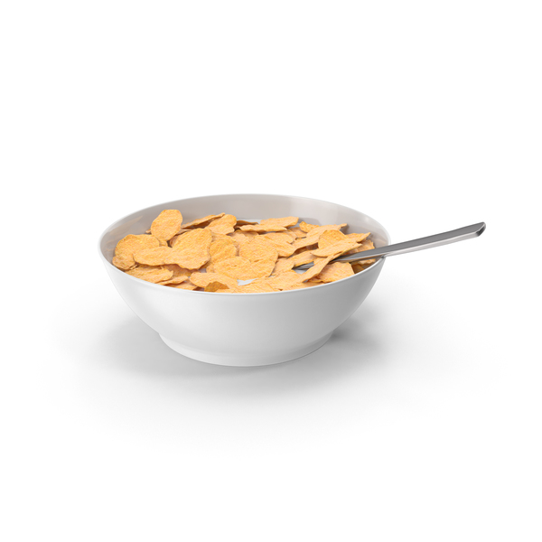

Cereal

Description
Cereal, formally termed breakfast cereal, is a traditional breakfast food made from processed cereal grains.
It is traditionally eaten as part of breakfast, or a snack food, primarily in Western societies.
Ingredients
- Frosted Flakes
- Milk
- Fruits
Steps
- Gather Your Supplies. The first step is to get the supplies needed for a bowl of cereal
- Get Bowl and Add Cereal. First get your bowl and place it on the counter top or table
- Add Milk. Now it is time to add milk!
- Add Spoon and Enjoy!